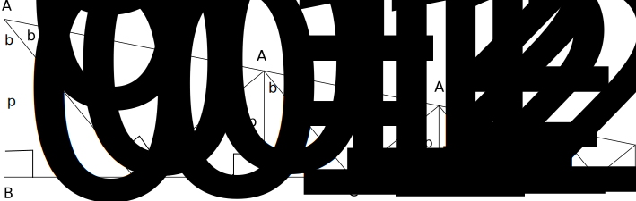

A curlicue is defined by the triple $(L,w,z)$. $L$ is the length. $w$ is the wide end and $z$ is the narrow end. The figure below is the crease pattern for a four cell curlicue. $\tan(2b)=\frac{L}{w-z}$. The five points $A_0,B_0,C_0,B_1,A_1$ defines the $0$-th cell. The points $A_i,B_i,C_i,B_{i+1},A_{i+1}$ define the $i$-th cell.

Consider first the case $i=0$. By defintion: $$A_0B_0=p_0=w$$ From $\triangle{B_0A_0C_0}$, $$B_0C_0=w\tan(b)=q_0$$. $\triangle{B_0A_0C_0}$ is similar to $\triangle{B_1C_0A_1}$. $$\frac{w}{C_0A_0}=\frac{C_0B_1}{C_0A_1}$$. $$C_0B_1={C_0A_1}\frac{w}{C_0A_0}$$. From $\triangle{B_1C_0A_1}$ $$C_0A_1= C_0A_0 \tan(b)$$. Substitute into previous equation: $$C_0B_1=w\tan(b)=q_0$$. From $\triangle{B_1C_0A_1}$, $$A_1B_1=q_0\tan(b)=w\tan^2(b)=p_1$$. we proved the THEOREM is true for $i=0$.
Assume the theorem is true for $i=n$, we shall prove that it is true for $i=n+1$. Let $k=n+1$. By the induction assumption, $$A_kB_k=p_k=w\tan^{2k}(b).$$ From $\triangle{B_kA_kC_k}$, $$B_kC_k=p_k\tan(b)=w\tan^{2k+1}(b)=q_k$$. $\triangle{B_kA_kC_k}$ is similar to $\triangle{B_{k+1}C_kA_{k+1}}$. $$\frac{p_k}{C_kA_k}=\frac{C_kB_{k+1}}{C_kA_{k+1}}.$$ $$C_kB_{k+1}={C_kA_{k+1}}\frac{p_k}{C_kA_k}$$. From $\triangle{B_{k+1}C_kA_{k+1}}$, $$C_kA_{k+1}= C_kA_k \tan(b)$$. Substitute into previous equation: $$C_kB_{k+1}=p_k\tan(b)=w\tan^{2k+1}(b)=q_k$$. From $\triangle{B_{k+1}C_kA_{k+1}}$, $$A_{k+1}B_{k+1}=q_k\tan(b)=w\tan^{2(k+1)}(b)=p_{k+1}$$. We proved the THEOREM is true for $k=n+1$ when it is true for $i=n$.
Let $L$ be the length of a curlicue with $j$ cells. $$L= 2w\tan(b)\frac{1-\tan^{2j}(b)}{1-\tan^2(b)}$$
Let $j$ be the number of cells in a curlicue of length $L$. $$j=\lfloor \log(1- \frac{(1-tan^2(b))(L)}{2w\tan(b)}) / \log(tan^2(b)) \rfloor$$
If $z$, the narrow end of the curlicue is readily available, there is an alternate expression for $j$: $$j =\lfloor \frac{\log(z/w)}{\log(\tan^2(b))}\rfloor$$
\begin{align*} L &= 2\sum_{k=0}^{k=j-1} q_k \\ &= 2\sum_{k=0}^{k=j-1} w \tan^{2k+1}(b) \\ &= 2w\tan(b)\sum_{k=0}^{k=j-1}\tan^{2k}(b) \\ &= 2w\tan(b)\frac{1-\tan^{2j}(b)}{1-\tan^2(b)}. \end{align*} To prove the second equation of the corollary, use the first equation. Move the term with $j$ to the left side and keep the other terms at the right side: \begin{align*} \tan^{2j} &= 1- \frac{(1-\tan^2(b))(L)}{2w\tan(b)}\\ j \log(\tan^2(j)) &= \log(\frac{(1-\tan^2(b))(L)}{2w\tan(b)})\\ j &=\log(\frac{(1-tan^2(b))(L)}{2w\tan(b)})/\log(\tan^2(j)) . \end{align*} $j$ is usually not an integer. The $\lfloor j \rfloor$ is the maximum number of cells that would fit inot a piece of paper of length $L$.
To prove the third inequality of the COROLLARY, let $k$ be the last cell of the curilicue $(L,w,z)$. If there are exactly $k$ cells, \begin{align*} A_kB_k=p_k=w\tan^{2k}(b)&=z\\ \tan^{2k}(b)&=z/w \\ k\log(\tan^2(b)&=\log(z/w)\\ k&=\frac{\log(z/w)}{\log(\tan^2(b)} \end{align*}
In general $$\lfloor k \rfloor = \lfloor \frac{\log(z/w)}{\log(\tan^2(b)} \rfloor$$ is the number of cells in the curlicue $(L,w,z)$.